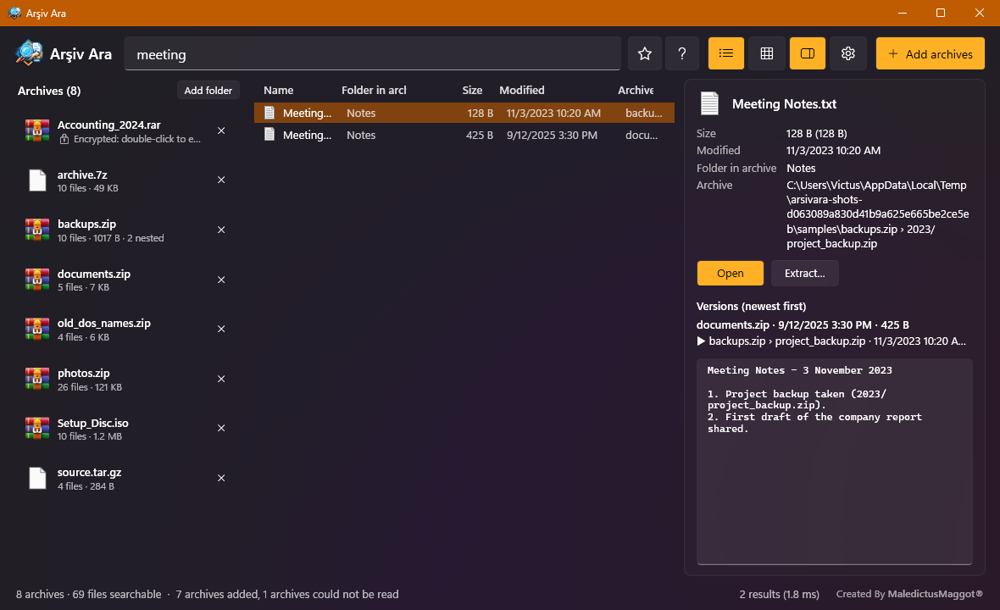
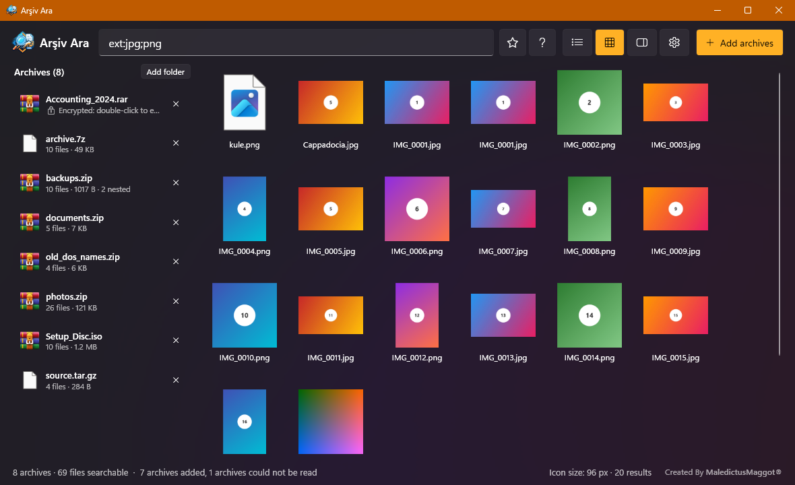
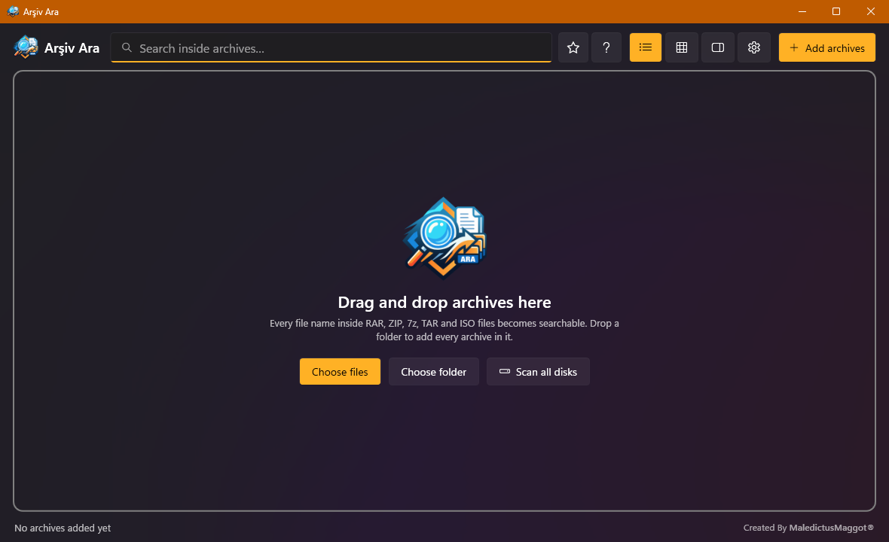

ZIP merkezi dizin
Sadece sondaki dizin okunur
ZIP'in dosya listesi dosyanın sonunda tek blokta durur. Arşiv Ara o bloğu okur, sıkıştırılmış veriye hiç dokunmaz.
Windows · açık kaynak · ücretsiz
ZIP, RAR, 7z, TAR ve ISO dosyalarını pencereye bırakın, birkaç harf yazın. İç içe arşivler dahil her dosya adı milisaniyeler içinde listelenir; çift tıklayınca sadece o dosya açılır.
Kurulum gerektirmezTamamen çevrimdışı4 dilMIT
| Ad | Boyut | Arşiv |
|---|
Ekran görüntüleri



Özellikler
a|b VEYA, !taslak DEĞİL, "tam ifade", *.pdf, boyut:>10mb, tarih:2024, regex:. Aramalar kaydedilebilir.sirket yazınca Şirket, istanbul yazınca İSTANBUL bulunur. DOS (CP857) adlı eski ZIP'ler doğru okunur.kopya: ile aynı içerikli dosyalar, icerik: ile dosyaların içinde arama.Arama dili
Büyük/küçük harf ve aksan fark etmez. Programda arama kutusunun yanındaki ? düğmesi aynı listeyi gösterir.
| Sorgu | Ne bulur |
|---|---|
fatura 2024 | İki kelime de geçmeli (VE) |
rapor|sunum | Biri yeterli (VEYA) |
!taslak | Bunu içermeyenler (DEĞİL) |
"hesap özeti" | Tam ifade, boşluk dahil |
*.pdfIMG_00??.jpg | Joker karakterler, dosya adında |
ext:pdf;docx | Uzantıya göre |
arsiv:2025 | Sadece adı ya da yolu bunu içeren arşivlerde |
klasor:dosya: | Sadece klasörler / sadece dosyalar |
ad:="Rapor.pdf" | Tam dosya adı |
boyut:>10mbboyut:1mb..1gb | Boyut |
tarih:2024tarih:>=2024-06-01tarih:buhafta | Değiştirilme tarihi |
regex:^fatura_\d+ | Düzenli ifade |
kopya: | Aynı içerikli kopyalar (boyut ve CRC) |
icerik:zümrüt | Dosyaların içinde: metin ve Office belgeleri (yavaş, diğer koşullarla daraltın) |
Türkçe ve İngilizce anahtarların ikisi de çalışır: arsiv/archive, klasor/folder, dosya/file, ad/name, boyut/size, tarih/date, kopya/dupe, icerik/content.
Kurulum
PS> irm https://raw.githubusercontent.com/YOUR_GITHUB_USER/ArsivAra/main/install.ps1 | iex
İşlemciye uygun (x64 ya da ARM64) son sürümü indirir, SHA256 ile doğrular, %LOCALAPPDATA%\Programs\ArsivAra içine koyar, Başlat menüsüne ve Yüklü uygulamalar listesine ekler. Yönetici yetkisi gerekmez.
PS> winget install VerloraStudios.ArsivAra
Windows'un kendi paket yöneticisiyle kurar ve günceller: winget upgrade VerloraStudios.ArsivAra
Windows için indir x64 Windows için indir ARM64
İndirip çift tıklayın. USB belleğe kopyalayıp başka bilgisayarlarda da açabilirsiniz; exe'nin yanına "portable.txt" koyarsanız ayarlar da yanında durur. Windows 10/11.
Neden hızlı
ZIP merkezi dizin
ZIP'in dosya listesi dosyanın sonunda tek blokta durur. Arşiv Ara o bloğu okur, sıkıştırılmış veriye hiç dokunmaz.
RAR5 Quick Open
RAR her dosyanın başlığını verisinin önüne yazar; listelemek normalde dosya başına bir disk atlamasıdır. WinRAR bu başlıkların kopyasını arşivin sonuna da yazar. Arşiv Ara bu bloğu tek seferde okur ve her başlığı CRC32 ile doğrular.
2–20 ms 1 milyon dosya adında
Tüm yollar küçük harfe çevrilip aksanları atılarak tek bir UTF-8 tampona yazılır; tampon vektörize IndexOf ile paralel taranır.
Lisans
Arşiv Ara, MIT lisansıyla dağıtılır. Kişisel ve ticari kullanım ücretsizdir; kaynak kodu herkese açıktır.
Kullanmak, kopyalamak, değiştirmek, birleştirmek, yayımlamak, dağıtmak, alt lisans vermek ve satmak.
Telif hakkı bildirimi ve lisans metni, yazılımın tüm kopyalarında korunmalıdır.
Yazılım olduğu gibi sunulur; herhangi bir garanti verilmez.
Lisans metni (LICENSE) Üçüncü taraf lisansları
Programın içinde de: Hakkında › Lisans metni.